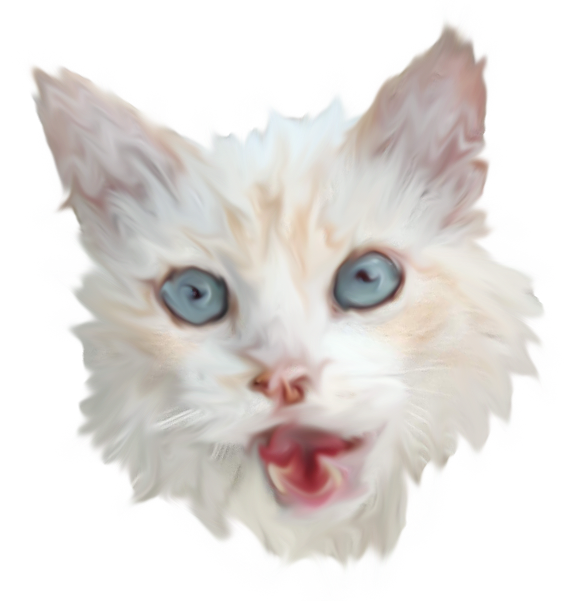

Asra Siddiqui

2019
HTML/CSS, Video, TouchDesigner, Adobe Premiere
This project is an exploration of my growing paranoia over my digital footprint and privacy.
An ominous eye watches me from behind my own camera as my screen distorts and moves away from me,
symbolizing a transfer of my data to corporations who will use it against me.
2019
HTML/CSS, Video
I made this net art project as a comfort to myself, as I was missing my cat friends, Gordo and Mel.
I wanted to recreate my time with them by using video footage to produce a sense of virtual interaction with the cats.
2019
Photo, Video, TouchDesigner, Adobe Premiere
I collaborated with my classmate, Matteo Leva to create this installation project, which consists of a video and a destroyed book.
The video is a digital rendition of the book, and both are glitched out.
An iPad screen playing the video is placed inside the destroyed pages of the book and viewers are encouraged
to explore both the video and the book, as well as the connections between the two.
The subject of the book and video is The Colosseum.
While Matteo worked on the physical aspects of the installation, the ruined book and tablet that would be fit inside,
I worked on the digital video art that would play on the tablet placed inside the book.
2019
Video, Adobe Premiere
See what I see. This short film is a piece of my mind where memories collide with and distort one another.
I used a collection of video footage that I saved from random events from my life for the very purpose of producing some form of video art.